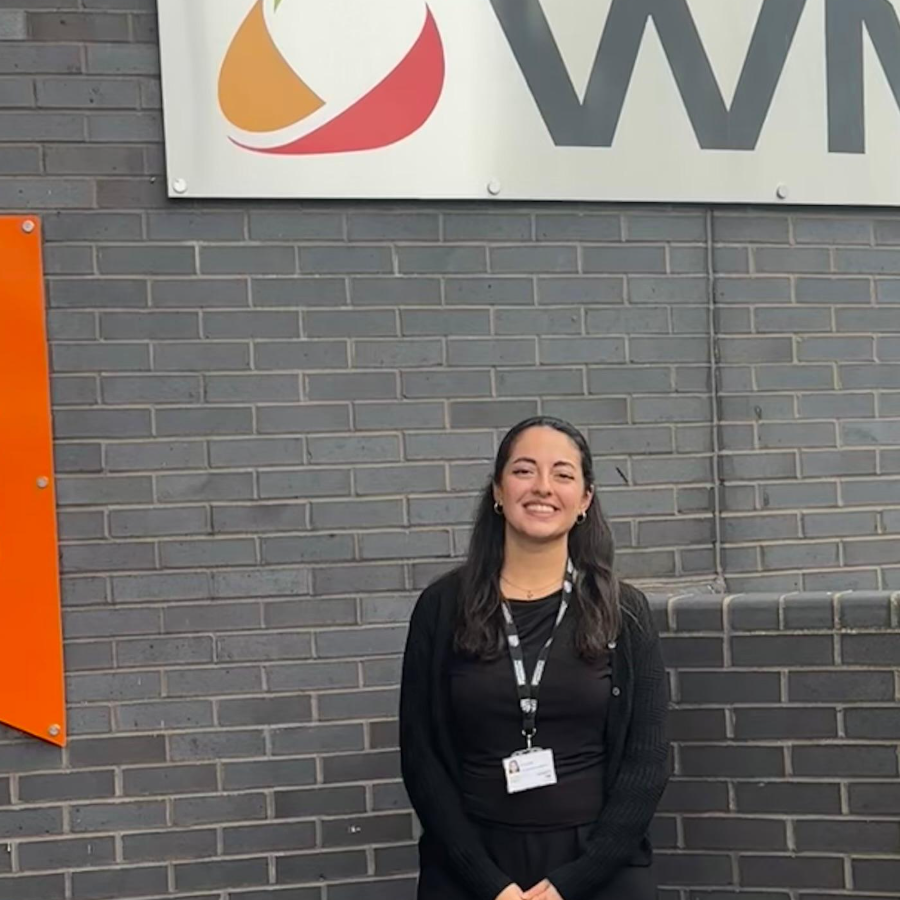

Dilara Bayram, MSc Applied AI · Warwick.

About me
I’m an MSc Applied AI student at Warwick, with an Industrial Engineering background from ITU. My work sits between applied AI, product thinking, and organisational systems: messy data, slow decisions, and workflows that need better tools.
Over the last few years, I’ve worked across factory planning, international sales analytics, HR technology, and NLP-based competency mapping. I’m usually drawn to the same kind of problem: people have the data somewhere, but not in a form they can actually use to make decisions.
I’m currently working on agentic AI systems for B2B product feedback. Before that, I co-founded PerManage, a people analytics startup, and completed an undergraduate thesis with Mercedes-Benz Türk, where I built an NLP pipeline using BERT and semantic similarity to support workforce competency mapping.
I’m looking for a 2026 graduate role in applied AI, data product, analytics, or technical program management. I’m especially interested in teams building real tools for real operational problems, where I can stay close to the technical work while also thinking about users, workflows, and what actually gets built.
I have the right to work in the UK through the Graduate Route and do not require sponsorship for graduate start dates.
Selected work, from models to usable systems.
A mix of thesis, startup, hackathon, internship, and personal work across NLP, data, and product. Each case study explains the problem, what I built, and what I would do differently now.
Competency intelligence platform
BSc thesis · Mercedes-Benz Türk · 2025
Mercedes-Benz Türk had no standardised competency model; HR processes ran subjectively, with no shared language across departments. I built an NLP pipeline using BERT and semantic similarity over 1,000+ job descriptions, deployed on SharePoint + PowerApps and now used by HR for workforce planning.
Agentic feedback intelligence for B2B SaaSin progress
MSc dissertation · University of Warwick · Results expected September 2026
B2B SaaS teams drown in feedback from support tickets, reviews, and calls, but no system connects the signal to a product decision. I'm building an agentic system that aggregates feedback across channels, tracks how topics shift over time, and surfaces prioritised recommendations with source evidence.
EEG mental workload classification
Solo · Deep learning · COG-BCI MATB · 2025
EEG-based workload classifiers fail across sessions: electrode drift and cognitive adaptation mean session 3 looks like a different signal from sessions 1 and 2. I built a multi-scale CNN-LSTM with parallel frequency branches and per-session domain adaptation, reaching 59.9% accuracy on a blind cross-session test across 29 subjects.
SentinelDrift, product sentiment drift detectiongroup
Group project · NLP + deep learning · Warwick · 2026
A system for spotting when smartphone-review sentiment shifts at the aspect level, before a product issue becomes obvious in star ratings. We combined PyABSA, TF-IDF baselines, monthly aggregation, CUSUM, PELT, and an LSTM autoencoder, then surfaced the results through a React dashboard.
Diabetes risk prediction
Solo · Machine learning · CDC BRFSS · 2025
Nearly 45% of diabetic adults don't know they have it, and standard classifiers optimise for accuracy rather than catching the cases that matter. I tuned an XGBoost classifier at threshold 0.15 to hit ~80% recall, with Platt calibration so the scores are clinically meaningful and SHAP to explain individual predictions.
PerManage, people analytics for workforce decisions
Co-founder & product manager · ITU Teknopark incubator · 2024
SMEs with 50–500 employees often don't understand why good people leave until after the fact, and no affordable tool connects hiring, exit, and performance data in one place. I co-founded and led product for an AI-driven people analytics platform, from user research and roadmap to early pilot at ITU ARI Teknopark.
Student mental health dashboard
Solo · Streamlit · Python · 2025
Depression rates of 54% among Bangladeshi university students, but no accessible tool for researchers to actually explore the data: filterable, visual, testable. I built a Streamlit dashboard with a 4-layer architecture and 191 TDD tests, covering choropleth maps across all eight divisions, full CRUD over SQLite, and PDF export.
Customer purchase pattern analysis
Solo · Graph algorithms · Python · 2025
Which items do people actually buy together, and how do you build a recommender without it just surfacing the most popular item every time? I modelled 14,963 supermarket baskets as a weighted co-purchase graph built from scratch; the most interesting finding was that 13 of the top 20 bundles include whole milk, a frequency bias any naive recommender will reproduce.
SafePrompt Hub, prompt privacy for the browser
Hackathon · Google, NatWest Accelerator & Warwick · 2026
Employees paste sensitive data (customer names, contracts, financials) into AI tools without thinking, and it leaves the browser before anyone can stop it. My team built a Chrome extension that intercepts prompts in real time, combining Google Cloud DLP with an on-device DistilBERT classifier to strip sensitive content before it's sent, shipped in 48 hours at a Google/NatWest hackathon.
Where I've worked, and what I did there.
M.Sc. Applied Artificial Intelligence
University of Warwick · United Kingdom
Coursework in machine learning, deep learning, NLP, and databases. Currently exploring learning-systems design and retrieval for low-resource domains.
B.Sc. Industrial Engineering
Istanbul Technical University · GPA 3.45
Thesis with Mercedes-Benz Türk on NLP-based competency extraction. Coursework across operations research, statistics, ML, and business planning.
Co-founder & product manager
PerManage · ITU Teknopark, Istanbul
Co-founded an AI-driven HR analytics start-up focused on workforce planning. Led product direction and the path from idea to pilot with a cross-functional team.
Factory & planning intern
Mercedes-Benz Türk HQ
Ran process analyses and built an MS Project–based resource plan that cleaned up factory planning, improved capacity utilisation, and surfaced bottlenecks.
International sales intern
Temsa
Automated weekly reporting with Excel and Power BI, and ran competitor benchmarking across 10+ export regions to find expansion candidates.
Planning officer
Metal Construction
Designed a project management tool, built CPM trackers and Power BI dashboards, and took on-time delivery to 95% across a portfolio of active projects.
President & founding member
Society of Women Engineers · Istanbul Technical University
Led a 40-person active committee and 300-person regular membership. Ran industry events, managed external partners, and built the organisation from a small founding group into one of ITU's larger student societies.
Notion Campus Leader
Notion · Istanbul Technical University
Represented Notion across university communities, ran workshops on digital productivity and project management, and helped students switch from scattered notes to structured systems.
Core skills, across AI, data, product, and delivery.
data & analytics
Used across 4+ projects & 3 internships
- ›SQL, querying, joins, relational data
- ›Power BI, dashboards, reporting, storytelling
- ›Excel, modelling, analysis, automation
- ›Statistics, forecasting, operations research
applied ai & nlp
Core focus · MSc + 4 AI/ML projects
- ›Python, pandas, scikit-learn, notebooks
- ›NLP, BERT, embeddings, semantic similarity
- ›LLM workflows, RAG, agents, prompt design
- ›Model evaluation, error analysis, human review
product & delivery
Industry experience · PerManage co-founder + Mercedes-Benz Türk
- ›Product discovery, user needs, roadmaps
- ›Agile / Scrum, feature prioritisation
- ›Stakeholder management, requirements gathering
- ›MVP design, pilot planning, iteration
systems & platforms
Production deployments · SharePoint, GitHub, MS Project
- ›PowerApps, SharePoint, Microsoft ecosystem
- ›MS Project, CPM, process planning
- ›Git, GitHub, technical documentation
Say hello, I read everything.
Happy to talk about graduate roles, collaborations, or work at the intersection of applied AI, data products, and operational decision-making.